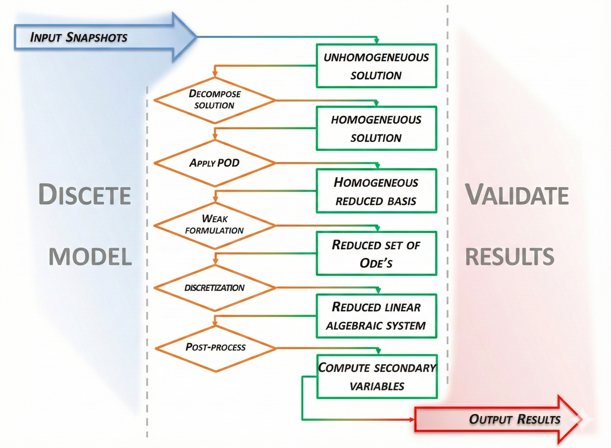
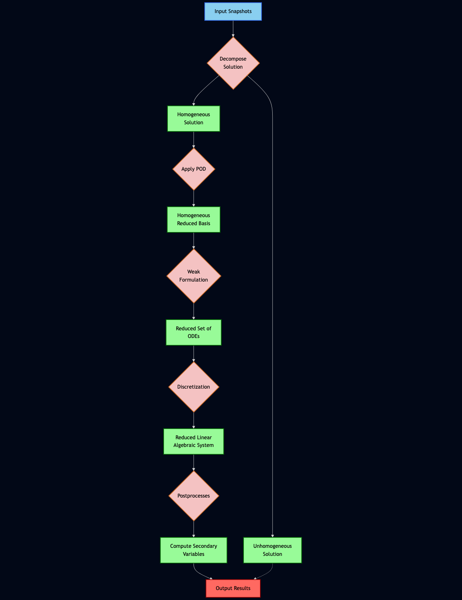

A diagram saved as an image is easy to share and awkward to revise. In this class, we explored a different starting point: give generative AI the image, ask it to recover the structure, and express that structure in Mermaid.




The experiment
We gave ChatGPT 5.1 and Gemini 3 the same legacy flowchart and prompt. The task was to interpret the boxes, labels and connections, then produce Mermaid source that could be opened in an editor.
The chart describes a modelling workflow. It begins with input snapshots and splits the solution into homogeneous and unhomogeneous parts. The homogeneous branch proceeds through a reduced-basis construction, a weak formulation, discretization and postprocessing before contributing to the output.
This makes the branching logic a useful check: an attractive diagram is only helpful if it preserves the relationships in the original.
The useful change is in the representation
The output is more than a replacement image. In Mermaid, a label can be corrected by editing a line of text; a connection can be changed by updating an arrow. The source can be stored in Git alongside the rest of a project.
Input[Input Snapshots] --> Step1{Decompose Solution}
Step1 --> Res1a[Unhomogeneous Solution]
Step1 --> Res1b[Homogeneous Solution]These three connections encode the first branch. They are also easy to inspect independently of colour, spacing or visual style.
What we observed
The class notes report that Gemini produced its result faster and interpreted the branching and styling more accurately in this example. Both models generated usable Mermaid code.
This was a live demonstration using one input, rather than a controlled benchmark. It provides a practical example of the workflow; it does not establish which model is more reliable across other diagrams.
Try the source
Copy the source below into Mermaid Live. Change a label or connection, inspect the result, and export an SVG when you are ready to use it elsewhere.
Mermaid source from the class
flowchart TD
%% Define Styles using a Pantone-inspired palette
classDef inputNode fill:#89CFF0,stroke:#2B60DE,stroke-width:2px,color:black;
classDef actionNode fill:#F4C2C2,stroke:#D2691E,stroke-width:2px,color:black,shape:diamond;
classDef resultNode fill:#98FB98,stroke:#006400,stroke-width:2px,color:black;
classDef outputNode fill:#FF6961,stroke:#8B0000,stroke-width:2px,color:black;
Input[Input Snapshots]:::inputNode
Output[Output Results]:::outputNode
Step1{Decompose<br/>Solution}:::actionNode
Res1a[Unhomogeneous<br/>Solution]:::resultNode
Res1b[Homogeneous<br/>Solution]:::resultNode
Step2{Apply POD}:::actionNode
Res2[Homogeneous<br/>Reduced Basis]:::resultNode
Step3{Weak<br/>Formulation}:::actionNode
Res3[Reduced Set of<br/>ODEs]:::resultNode
Step4{Discretization}:::actionNode
Res4[Reduced Linear<br/>Algebraic System]:::resultNode
Step5{Postprocesses}:::actionNode
Res5[Compute Secondary<br/>Variables]:::resultNode
Input --> Step1
Step1 --> Res1a
Step1 --> Res1b
Res1b --> Step2
Step2 --> Res2
Res2 --> Step3
Step3 --> Res3
Res3 --> Step4
Step4 --> Res4
Res4 --> Step5
Step5 --> Res5
Res5 --> Output
Res1a -.-> OutputA starting point for revision
Generative AI can help move a diagram from pixels to an editable description. The practical gain is the ability to revise, review and share that description. The original image remains the reference against which the conversion should be checked.